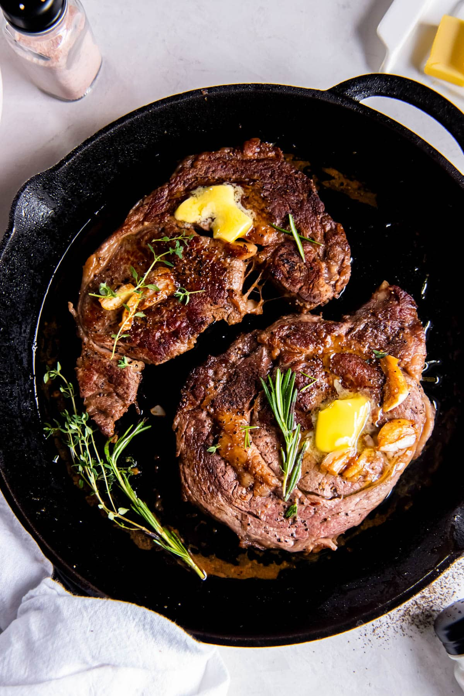

Steak

Description
This recipe is all about pan fried steak and how to make it in the best way possible.
We will go over the ingredients and steps of preparation.
Ingredients:
- Steak - about 300 grams
- Coarse salt and black pepper
- Neutral oil - 2Tb
- Butter - about 50 grams
- Herbs - a small bunch
Steps:
For best results salt steak 24 hours in advance and leave uncovered in fridge
- Heat heavy duty pan until smoking
- Put vegetable oil and make sure its shiny and smoking
- Add salted steak
- Cook until rare flipping often
- Add butter and herbs and baste baste baste
- Cook until medium rare flipping often
- Remove from pan, let rest covered with aluminum foil for 10 minutes